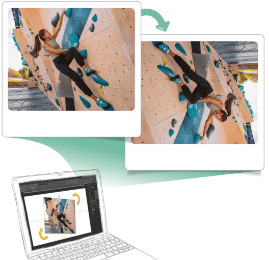
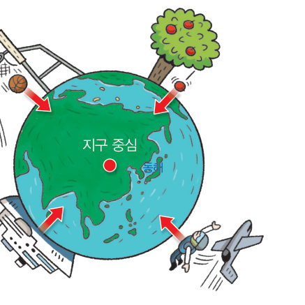
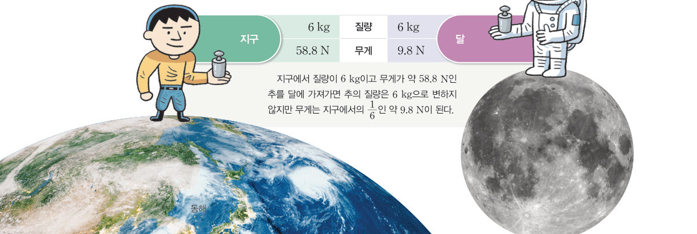

들고 있던 공을 가만히 놓으면 공이 아래로 떨어진다. 또 공을 위로 던져도 공이 위로 올라가다가 다시 아래로 떨어진다. 이러한 현상은 지구가 물체를 당기기 때문에 나타난다. 지구, 달 등과 같은 천체가 물체를 당기는 힘을 중력이라고 한다.

164쪽운동하는 사람의 그림을 검색해 방향을 임의로 돌린 다음 공유한다.
게임돌아간 사진에서 중력의 방향 찾기
사진이 돌아가 있어요! 사진 가운데의 빨간 점에서 드래그하여 이 사람에게 작용하는 중력의 방향을 화살표로 그리고 [확인]을 눌러 보자. 3문제를 맞혀 보자.
맞힌 문제 0 / 3
1친구들이 공유한 그림에서 중력의 방향을 찾을 때 무엇을 보고 판단했는지 이야기해 보자.
교과서중력의 방향과 무게 165쪽

그림 5-4중력의 방향
위로 던진 공이 다시 아래로 내려오는 것처럼 지표면에 있는 물체는 아래 방향으로 중력을 받는다. 물체가 지구상의 어느 위치에 있든지 중력은 아래 방향으로 작용한다. 이는 그림 5-4와 같이 중력이 지구 중심 방향으로 작용하기 때문이다.
우리가 물체를 들었을 때 무겁거나 가볍게 느끼는 까닭은 물체마다 작용하는 중력의 크기가 다르기 때문이다. 물체에 작용하는 중력의 크기를 무게라고 한다.
3D 움직이는 그림 5-4지구 어디서든 공을 떨어뜨리면?
버튼으로 지구 곳곳(한국, 프놈펜, 남극, 지구 반대편 등)에 사람을 세우고 [공 떨어뜨리기]를 눌러 보자. 지구를 드래그해서 돌려 보면, 모든 공이 어디를 향해 떨어지는지 알 수 있어요.
3D 지구 · 드래그하여 돌리기사람 4명
1지구 반대편에 서 있는 사람이 공을 떨어뜨리면 공은 떨어진다. 따라서 중력은 항상 방향으로 작용한다.
교과서무게와 질량은 어떻게 다를까? 165쪽
중력은 지구뿐만 아니라 다른 천체에서도 작용하고, 천체마다 물체에 작용하는 중력의 크기가 다르다. 달의 중력은 지구 중력의 약 1/6이므로 달에서 측정한 물체의 무게는 지구에서 측정한 무게의 약 1/6이다. 이와 같이 같은 물체라도 측정하는 장소에 따라 무게가 다르게 나타난다.
한편 질량은 물질의 고유한 양이기 때문에 무게와 달리 측정하는 장소가 달라져도 변하지 않는다. 질량의 단위는 kg(킬로그램)을 사용하며, 지구 표면에서 질량 1 kg인 물체에 작용하는 중력의 크기는 약 9.8 N이다.

그림 5-5지구와 달에서의 무게와 질량 — 지구 6 kg·58.8 N / 달 6 kg·9.8 N
가상 실험우주 측정소 — 용수철저울과 양팔저울
천체와 추의 질량을 바꿔 보자. 용수철저울은 중력의 크기(무게)를, 양팔저울은 기준 추와 비교하여 질량을 재요.
1질량 6 kg인 추를 달에서 재면 용수철저울은 약 N, 양팔저울로 잰 질량은 kg이다.
💭사고력 지구에서 무게 1 N인 물체와 달에서 무게 1 N인 물체의 질량을 비교해서 설명해 보자.
스스로 확인하기164쪽 학습 목표를 달성했는지 확인해 보자 165쪽
1개념 확인 지구, 달 등과 같은 천체가 물체를 당기는 힘을 ( )(이)라고 한다.
🧩 두 번째 블록 · 힌트 조각 1 (165쪽)
스쿠버 다이버에게 지구가 당기는 힘인 중력이 ( ) 방향으로 작용한다.
5분 테스트지구가 당기는 힘
1중력의 크기는 물체의 질량에 한다. 달에서의 중력은 지구 중력의 약 이다. 측정 장소가 달라져도 변하지 않는 것은 이다. 질량이 3 kg인 물체의 지구에서 무게는 약 N이다.
2중력에 의한 현상이면 O, 아니면 X를 골라 보자. ⑥ 번지점프를 하면 아래로 떨어진다. ⑦ 폭포의 물이 위에서 아래로 떨어진다. ⑧ 산에 오를 때 바닥이 울퉁불퉁한 등산화를 신는다.
스스로 정리하기중력 176쪽
1중력
(1) : 지구와 같은 천체가 물체를 당기는 힘 (2) 중력의 방향: 지구 중심 방향 (3) 중력의 크기: 물체의 (단위: N) (4) : 측정하는 장소가 달라져도 변하지 않는 물질의 고유한 양(단위: kg)
제출학생 정보 · 제출하기
모든 활동을 마친 뒤 제출하면 전체가 한 번에 채점되고 피드백이 나타나요. 답안은 선생님 스프레드시트(중1 탭)에 기록돼요.